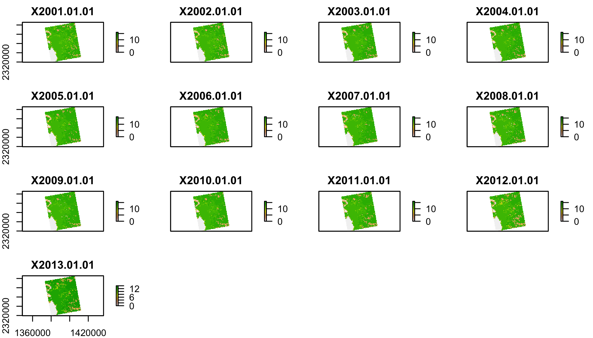
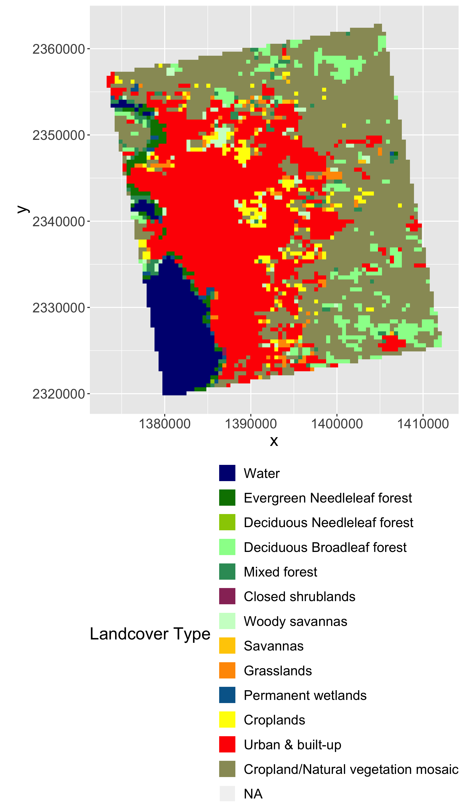
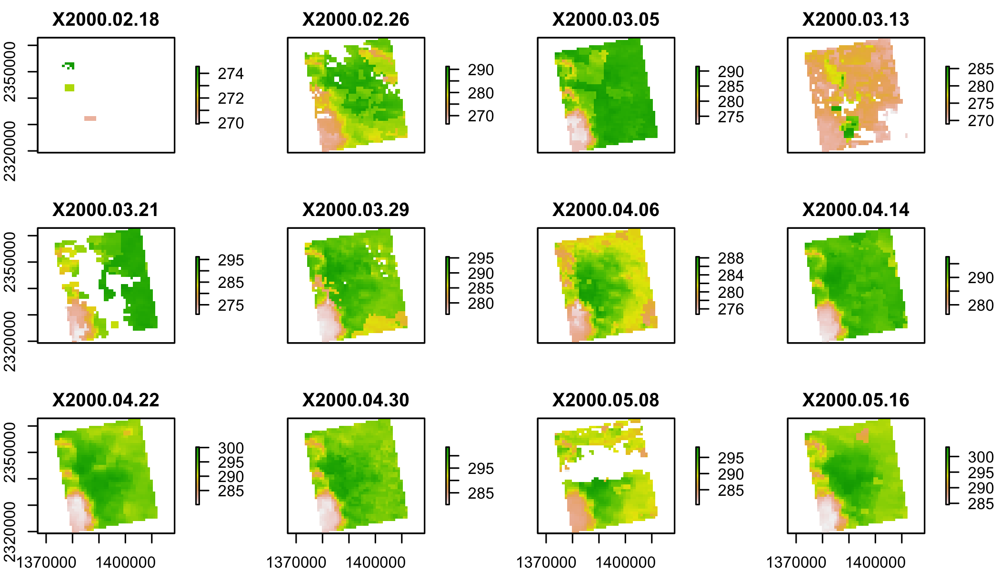
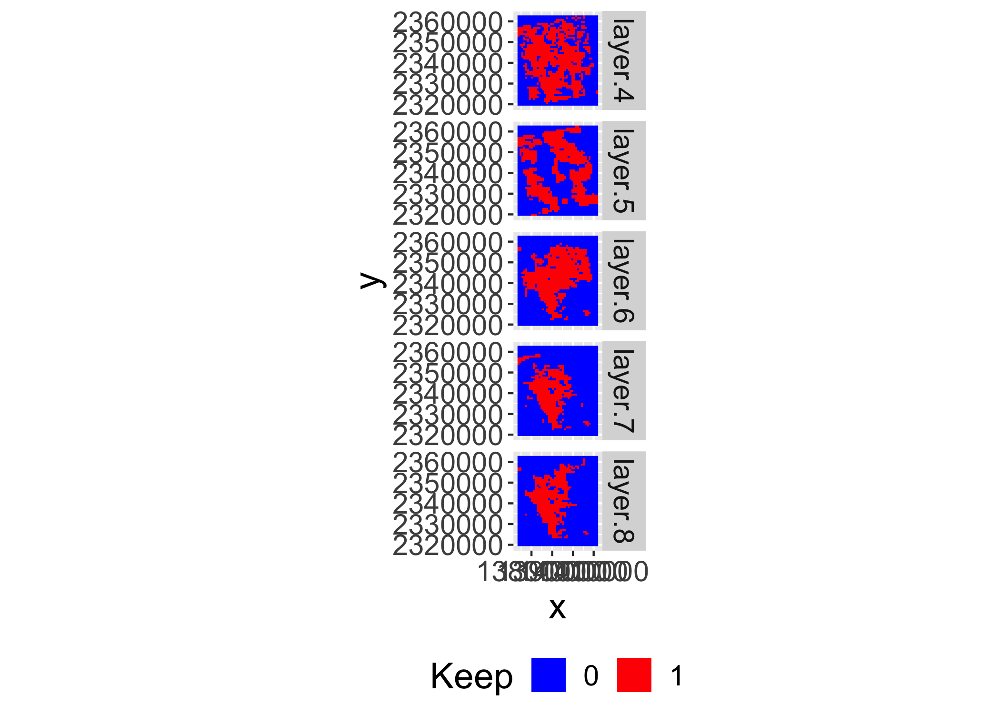
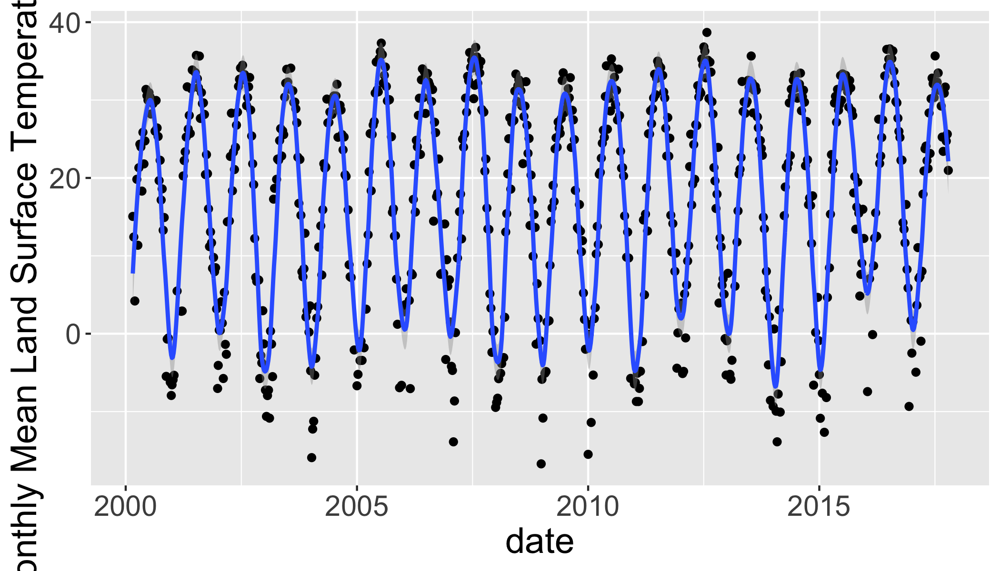
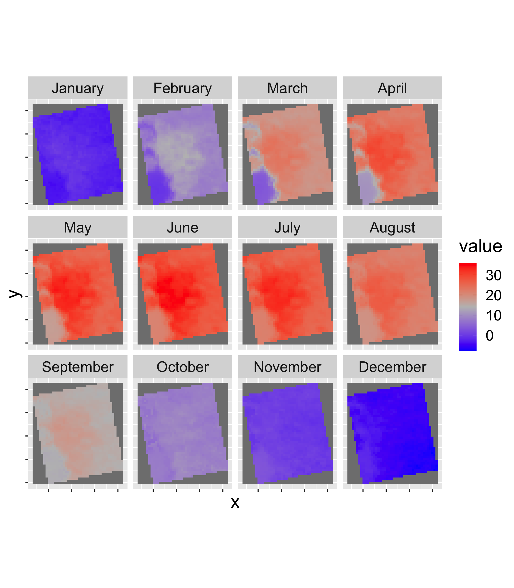
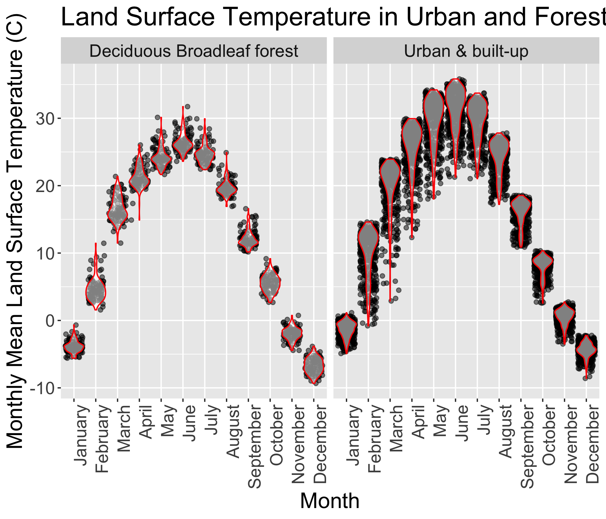

Satellite Remote Sensing
Analyze Satellite Data
Tasks
- Extract a timeseries from a single location in a netcdf file (part 1)
- Calculate a monthly climatology from a weekely timeseries (part 2)
- Summarize Land Surface Temperature by Land Cover (part 3)
The R Script associated with this page is available here. If you like, you can download this file and open it (or copy-paste into a new script) with RStudio so you can follow along.
Libraries
library(raster)
library(rasterVis)
library(rgdal)
library(ggmap)
library(tidyverse)
library(knitr)
# New Packages
library(ncdf4) # to import data from netcdf formatCase Study Set up
Identify (and create) download folders
Today we’ll work with:
- Land Surface Temperature (
lst): MOD11A2 - Land Cover (
lc): MCD12Q1
Land Use Land Cover
# Create afolder to hold the downloaded data
dir.create("data",showWarnings = F) #create a folder to hold the data
lulc_url="https://github.com/adammwilson/DataScienceData/blob/master/inst/extdata/appeears/MCD12Q1.051_aid0001.nc?raw=true"
lst_url="https://github.com/adammwilson/DataScienceData/blob/master/inst/extdata/appeears/MOD11A2.006_aid0001.nc?raw=true"
# download them
download.file(lulc_url,destfile="data/MCD12Q1.051_aid0001.nc", mode="wb")
download.file(lst_url,destfile="data/MOD11A2.006_aid0001.nc", mode="wb")You should also edit your .gitignore file (in your tasks repository folder) to include *data* on one line. This will prevent git from adding these files.
Load data into R
lulc=stack("data/MCD12Q1.051_aid0001.nc",varname="Land_Cover_Type_1")
lst=stack("data/MOD11A2.006_aid0001.nc",varname="LST_Day_1km")You will probably see some errors about
>>>> WARNING <<< attribute longitude_of_projection_origin is an 8-byte value, but R"
[1] "does not support this data type. I am returning a double precision"
[1] "floating point, but you must be aware that this could lose precision!"You can safely ignore this.
Explore LULC data
plot(lulc)
We’ll just pick one year to work with to keep this simple:
lulc=lulc[[13]]
plot(lulc)
Process landcover data
Assign land cover clases from MODIS website
Land_Cover_Type_1 = c(
Water = 0,
`Evergreen Needleleaf forest` = 1,
`Evergreen Broadleaf forest` = 2,
`Deciduous Needleleaf forest` = 3,
`Deciduous Broadleaf forest` = 4,
`Mixed forest` = 5,
`Closed shrublands` = 6,
`Open shrublands` = 7,
`Woody savannas` = 8,
Savannas = 9,
Grasslands = 10,
`Permanent wetlands` = 11,
Croplands = 12,
`Urban & built-up` = 13,
`Cropland/Natural vegetation mosaic` = 14,
`Snow & ice` = 15,
`Barren/Sparsely vegetated` = 16,
Unclassified = 254,
NoDataFill = 255)
lcd=data.frame(
ID=Land_Cover_Type_1,
landcover=names(Land_Cover_Type_1),
col=c("#000080","#008000","#00FF00", "#99CC00","#99FF99", "#339966", "#993366", "#FFCC99", "#CCFFCC", "#FFCC00", "#FF9900", "#006699", "#FFFF00", "#FF0000", "#999966", "#FFFFFF", "#808080", "#000000", "#000000"),
stringsAsFactors = F)
# colors from https://lpdaac.usgs.gov/about/news_archive/modisterra_land_cover_types_yearly_l3_global_005deg_cmg_mod12c1
kable(head(lcd))| ID | landcover | col | |
|---|---|---|---|
| Water | 0 | Water | #000080 |
| Evergreen Needleleaf forest | 1 | Evergreen Needleleaf forest | #008000 |
| Evergreen Broadleaf forest | 2 | Evergreen Broadleaf forest | #00FF00 |
| Deciduous Needleleaf forest | 3 | Deciduous Needleleaf forest | #99CC00 |
| Deciduous Broadleaf forest | 4 | Deciduous Broadleaf forest | #99FF99 |
| Mixed forest | 5 | Mixed forest | #339966 |
Convert LULC raster into a ‘factor’ (categorical) raster. This requires building the Raster Attribute Table (RAT). Unfortunately, this is a bit of manual process as follows.
# convert to raster (easy)
lulc=as.factor(lulc)
# update the RAT with a left join
levels(lulc)=left_join(levels(lulc)[[1]],lcd)## Joining, by = "ID"# plot it
gplot(lulc)+
geom_raster(aes(fill=as.factor(value)))+
scale_fill_manual(values=levels(lulc)[[1]]$col,
labels=levels(lulc)[[1]]$landcover,
name="Landcover Type")+
coord_equal()+
theme(legend.position = "bottom")+
guides(fill=guide_legend(ncol=1,byrow=TRUE))
Land Surface Temperature
plot(lst[[1:12]])
Convert LST to Degrees C
You can convert LST from Degrees Kelvin (K) to Celcius (C) with offs().
offs(lst)=-273.15
plot(lst[[1:10]])
MODLAND Quality control
See a detailed explaination here. Some code below from Steven Mosher’s blog.
Expand this to learn more about MODIS quality control. This is optional for this class, but important if you want to work with this kind of data ‘for real’.
MOD11A2 (Land Surface Temperature) Quality Control
lstqc=stack("data/MOD11A2.006_aid0001.nc",varname="QC_Day")
plot(lstqc[[1:2]])
LST QC data
QC data are encoded in 8-bit ‘words’ to compress information.
values(lstqc[[1:2]])%>%table()## .
## 2 17 33 65 81 97 145
## 1569 8 5 675 335 4 90intToBits(65)## [1] 01 00 00 00 00 00 01 00 00 00 00 00 00 00 00 00 00 00 00 00 00 00 00
## [24] 00 00 00 00 00 00 00 00 00intToBits(65)[1:8]## [1] 01 00 00 00 00 00 01 00as.integer(intToBits(65)[1:8])## [1] 1 0 0 0 0 0 1 0MODIS QC data are Big Endian
| Format | Digits | value | sum |
|---|---|---|---|
| Little Endian | 1 0 0 0 0 0 1 0 | 65 | 2^0 + 2^6 |
| Big Endian | 0 1 0 0 0 0 0 1 | 65 | 2^6 + 2^0 |
Reverse the digits with rev() and compare with QC table above.
rev(as.integer(intToBits(65)[1:8]))## [1] 0 1 0 0 0 0 0 1QC for value 65:
- LST produced, other quality, recommend examination of more detailed QA
- good data quality of L1B in 7 TIR bands
- average emissivity error <= 0.01
- Average LST error <= 2K
Filter the the lst data using the QC data
## set up data frame to hold all combinations
QC_Data <- data.frame(Integer_Value = 0:255,
Bit7 = NA, Bit6 = NA, Bit5 = NA, Bit4 = NA,
Bit3 = NA, Bit2 = NA, Bit1 = NA, Bit0 = NA,
QA_word1 = NA, QA_word2 = NA, QA_word3 = NA,
QA_word4 = NA)
##
for(i in QC_Data$Integer_Value){
AsInt <- as.integer(intToBits(i)[1:8])
QC_Data[i+1,2:9]<- AsInt[8:1]
}
QC_Data$QA_word1[QC_Data$Bit1 == 0 & QC_Data$Bit0==0] <- "LST GOOD"
QC_Data$QA_word1[QC_Data$Bit1 == 0 & QC_Data$Bit0==1] <- "LST Produced,Other Quality"
QC_Data$QA_word1[QC_Data$Bit1 == 1 & QC_Data$Bit0==0] <- "No Pixel,clouds"
QC_Data$QA_word1[QC_Data$Bit1 == 1 & QC_Data$Bit0==1] <- "No Pixel, Other QA"
QC_Data$QA_word2[QC_Data$Bit3 == 0 & QC_Data$Bit2==0] <- "Good Data"
QC_Data$QA_word2[QC_Data$Bit3 == 0 & QC_Data$Bit2==1] <- "Other Quality"
QC_Data$QA_word2[QC_Data$Bit3 == 1 & QC_Data$Bit2==0] <- "TBD"
QC_Data$QA_word2[QC_Data$Bit3 == 1 & QC_Data$Bit2==1] <- "TBD"
QC_Data$QA_word3[QC_Data$Bit5 == 0 & QC_Data$Bit4==0] <- "Emiss Error <= .01"
QC_Data$QA_word3[QC_Data$Bit5 == 0 & QC_Data$Bit4==1] <- "Emiss Err >.01 <=.02"
QC_Data$QA_word3[QC_Data$Bit5 == 1 & QC_Data$Bit4==0] <- "Emiss Err >.02 <=.04"
QC_Data$QA_word3[QC_Data$Bit5 == 1 & QC_Data$Bit4==1] <- "Emiss Err > .04"
QC_Data$QA_word4[QC_Data$Bit7 == 0 & QC_Data$Bit6==0] <- "LST Err <= 1"
QC_Data$QA_word4[QC_Data$Bit7 == 0 & QC_Data$Bit6==1] <- "LST Err > 2 LST Err <= 3"
QC_Data$QA_word4[QC_Data$Bit7 == 1 & QC_Data$Bit6==0] <- "LST Err > 1 LST Err <= 2"
QC_Data$QA_word4[QC_Data$Bit7 == 1 & QC_Data$Bit6==1] <- "LST Err > 4"
kable(head(QC_Data))| Integer_Value | Bit7 | Bit6 | Bit5 | Bit4 | Bit3 | Bit2 | Bit1 | Bit0 | QA_word1 | QA_word2 | QA_word3 | QA_word4 |
|---|---|---|---|---|---|---|---|---|---|---|---|---|
| 0 | 0 | 0 | 0 | 0 | 0 | 0 | 0 | 0 | LST GOOD | Good Data | Emiss Error <= .01 | LST Err <= 1 |
| 1 | 0 | 0 | 0 | 0 | 0 | 0 | 0 | 1 | LST Produced,Other Quality | Good Data | Emiss Error <= .01 | LST Err <= 1 |
| 2 | 0 | 0 | 0 | 0 | 0 | 0 | 1 | 0 | No Pixel,clouds | Good Data | Emiss Error <= .01 | LST Err <= 1 |
| 3 | 0 | 0 | 0 | 0 | 0 | 0 | 1 | 1 | No Pixel, Other QA | Good Data | Emiss Error <= .01 | LST Err <= 1 |
| 4 | 0 | 0 | 0 | 0 | 0 | 1 | 0 | 0 | LST GOOD | Other Quality | Emiss Error <= .01 | LST Err <= 1 |
| 5 | 0 | 0 | 0 | 0 | 0 | 1 | 0 | 1 | LST Produced,Other Quality | Other Quality | Emiss Error <= .01 | LST Err <= 1 |
Select which QC Levels to keep
keep=QC_Data[QC_Data$Bit1 == 0,]
keepvals=unique(keep$Integer_Value)
keepvals## [1] 0 1 4 5 8 9 12 13 16 17 20 21 24 25 28 29 32
## [18] 33 36 37 40 41 44 45 48 49 52 53 56 57 60 61 64 65
## [35] 68 69 72 73 76 77 80 81 84 85 88 89 92 93 96 97 100
## [52] 101 104 105 108 109 112 113 116 117 120 121 124 125 128 129 132 133
## [69] 136 137 140 141 144 145 148 149 152 153 156 157 160 161 164 165 168
## [86] 169 172 173 176 177 180 181 184 185 188 189 192 193 196 197 200 201
## [103] 204 205 208 209 212 213 216 217 220 221 224 225 228 229 232 233 236
## [120] 237 240 241 244 245 248 249 252 253How many observations will be dropped?
qcvals=table(values(lstqc)) # this takes a minute or two
QC_Data%>%
dplyr::select(everything(),-contains("Bit"))%>%
mutate(Var1=as.character(Integer_Value),
keep=Integer_Value%in%keepvals)%>%
inner_join(data.frame(qcvals))%>%
kable()## Joining, by = "Var1"| Integer_Value | QA_word1 | QA_word2 | QA_word3 | QA_word4 | Var1 | keep | Freq |
|---|---|---|---|---|---|---|---|
| 2 | No Pixel,clouds | Good Data | Emiss Error <= .01 | LST Err <= 1 | 2 | FALSE | 150019 |
| 17 | LST Produced,Other Quality | Good Data | Emiss Err >.01 <=.02 | LST Err <= 1 | 17 | TRUE | 44552 |
| 33 | LST Produced,Other Quality | Good Data | Emiss Err >.02 <=.04 | LST Err <= 1 | 33 | TRUE | 20225 |
| 49 | LST Produced,Other Quality | Good Data | Emiss Err > .04 | LST Err <= 1 | 49 | TRUE | 3 |
| 65 | LST Produced,Other Quality | Good Data | Emiss Error <= .01 | LST Err > 2 LST Err <= 3 | 65 | TRUE | 243391 |
| 81 | LST Produced,Other Quality | Good Data | Emiss Err >.01 <=.02 | LST Err > 2 LST Err <= 3 | 81 | TRUE | 203501 |
| 97 | LST Produced,Other Quality | Good Data | Emiss Err >.02 <=.04 | LST Err > 2 LST Err <= 3 | 97 | TRUE | 25897 |
| 113 | LST Produced,Other Quality | Good Data | Emiss Err > .04 | LST Err > 2 LST Err <= 3 | 113 | TRUE | 32 |
| 129 | LST Produced,Other Quality | Good Data | Emiss Error <= .01 | LST Err > 1 LST Err <= 2 | 129 | TRUE | 57 |
| 145 | LST Produced,Other Quality | Good Data | Emiss Err >.01 <=.02 | LST Err > 1 LST Err <= 2 | 145 | TRUE | 29607 |
| 161 | LST Produced,Other Quality | Good Data | Emiss Err >.02 <=.04 | LST Err > 1 LST Err <= 2 | 161 | TRUE | 3 |
| 177 | LST Produced,Other Quality | Good Data | Emiss Err > .04 | LST Err > 1 LST Err <= 2 | 177 | TRUE | 5 |
Do you want to update the values you are keeping?
Filter the LST Data keeping only keepvals
These steps take a couple minutes.
Make logical flag to use for mask
lstkeep=calc(lstqc,function(x) x%in%keepvals)Plot the mask
gplot(lstkeep[[4:8]])+
geom_raster(aes(fill=as.factor(value)))+
facet_grid(variable~.)+
scale_fill_manual(values=c("blue","red"),name="Keep")+
coord_equal()+
theme(legend.position = "bottom")
Mask the lst data using the QC data and overwrite the original data.
lst=mask(lst,mask=lstkeep,maskval=0)Add Dates to Z (time) dimension
The default layer names of the LST file include the date as follows:
names(lst)[1:5]## [1] "X2000.02.18" "X2000.02.26" "X2000.03.05" "X2000.03.13" "X2000.03.21"Convert those values to a proper R Date format by dropping the “X” and using as.Date().
tdates=names(lst)%>%
sub(pattern="X",replacement="")%>%
as.Date("%Y.%m.%d")
names(lst)=1:nlayers(lst)
lst=setZ(lst,tdates)Part 1: Extract timeseries for a point
Extract LST values for a single point and plot them.
- Use
lw=SpatialPoints(data.frame(x= -78.791547,y=43.007211))to define a new Spatial Point at that location. - Set the projection of your point with
projection()to"+proj=longlat". - Transform the point to the projection of the raster using
spTransform(). - Extract the LST data for that location with:
extract(lst,lw,buffer=1000,fun=mean,na.rm=T). You may want to transpose them witht()to convert it from a wide matrix to long vector. - Extract the dates for each layer with
getZ(lst)and combine them into a data.frame with the transposed raster values. You could usedata.frame(),cbind.data.frame()orbind_cols()to do this. The goal is to make a single dataframe with the dates and lst values in columns. - Plot it with
ggplot()including points for the raw data and a smooth version as a line. You will probably want to adjust bothspanandningeom_smooth.
Your graph should look like this: 
See the library(rts) for more timeseries related functions.
Part 2: Summarize weekly data to monthly climatologies
Now we will use a function called stackApply() to calculate monthly mean land surface temperature.
Hints:
- First make a variable called
tmonthby converting the dates to months usingas.numeric(format(getZ(lst2),"%m")) - Use
stackApply()to summarize the mean value per month (using thetmonthvariable you just created) and save the results aslst_month. - Set the names of the layers to months with
names(lst_month)=month.name - Plot the map for each month with
gplot()in the RasterVis Package. - Calculate the monthly mean for the entire image with
cellStats(lst_month,mean)
A plot of the monthly climatologies will look like this: 
And the table should be as follows:| Mean | |
|---|---|
| January | 6.38 |
| February | 16.51 |
| March | 22.20 |
| April | 25.89 |
| May | 28.17 |
| June | 26.49 |
| July | 21.43 |
| August | 13.63 |
| September | 6.40 |
| October | -0.76 |
| November | -5.27 |
| December | -2.75 |
Part 3: Summarize Land Surface Temperature by Land Cover
Make a plot and table to contrast Land Surface Temperature in Urban & built-up and Deciduous Broadleaf forest areas.
- Resample
lctolstgrid usingresample()withmethod=ngb. Extract the values from
lst_monthandlulc2into a data.frame as follows:lcds1=cbind.data.frame( values(lst_month), ID=values(lulc2[[1]]))%>% na.omit()- Gather the data into a ‘tidy’ format using
gather(key='month',value='value,-ID). - Use
mutate()to convert ID to numeric (e.g.ID=as.numeric(ID)and month to an ordered factor withmonth=factor(month,levels=month.name,ordered=T). - do a left join with the
lcdtable you created at the beginning. - Use
filter()to keep onlylandcover%in%c("Urban & built-up","Deciduous Broadleaf forest") Develop a ggplot to illustrate the monthly variability in LST between the two land cover types. The exact form of plot is up to you. Experiment with different geometries, etc.
One potential plot is as follows:

If you have extra time, try to reproduce the table in this box.
This is a more complicated table which involves using the zonal function to aggregate, followed by gathering, spreading, and creative pasteing to combine text fields.
| month | Deciduous Broadleaf forest | Urban & built-up |
|---|---|---|
| January | 24.28(±1.47) | 29.52(±3.45) |
| February | 12.16(±1.25) | 16.03(±1.89) |
| March | -3.83(±0.88) | -1.36(±1.16) |
| April | 16.61(±1.81) | 19.84(±3.77) |
| May | 4.67(±1.7) | 10.04(±3.51) |
| June | 19.68(±1.2) | 24.26(±2.48) |
| July | 24.66(±1.38) | 29.56(±2.79) |
| August | 21.27(±1.62) | 25.55(±3.49) |
| September | 26.4(±1.38) | 31.33(±3.08) |
| October | -6.72(±1.14) | -4.36(±1.04) |
| November | -1.98(±0.95) | 0.5(±1.16) |
| December | 5.51(±1.28) | 8.05(±1.54) |